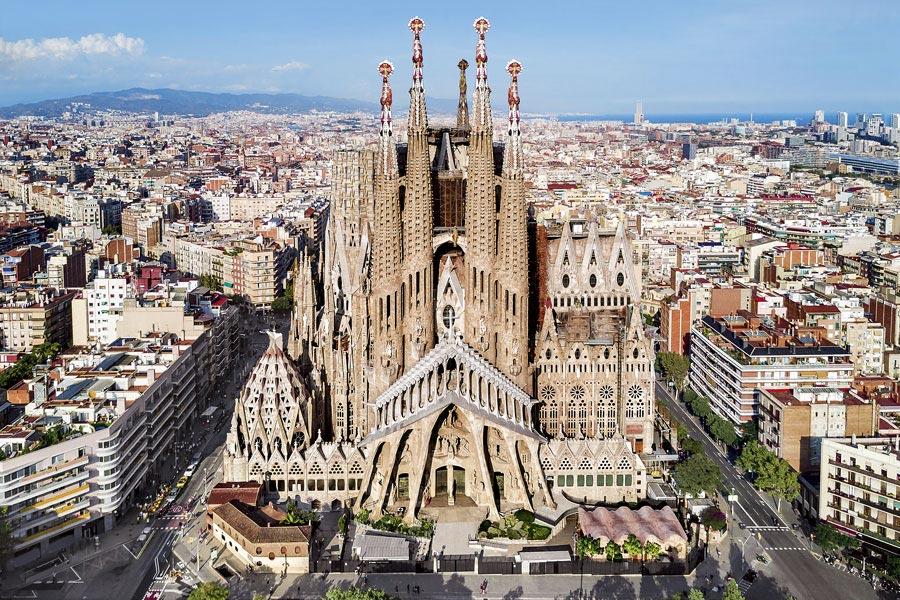

España: Mi experiencia y recomendaciones
Tuve la suerte de ir a España 3 veces en mi vida: la primera en 2015, la segunda en 2018, y la más reciente en 2025.
Para dar un poquito de contexto, en el año 2002/03, no recuerdo exacto, mis dos tíos se fueron a Europa a probar suerte, como muchos otros argentinos. Empezaron en Irlanda, y luego a España, donde finalmente se asentaron.
Mi Primer Viaje
Como dije antes, la primera vez que fui a España fue en enero del 2015, a visitar a mi familia. El viaje fue principalmente a Mallorca, pero también estuvimos unos días en Ibiza y Barcelona
Empezando por Mallorca, obviamente Palma es mi lugar favorito. Playas hermosas (aunque hacía mucho frío), centro histórico muy pintoresco, una catedral impactante y mucho más.
Con mi familia nos recorrimos todos los pueblos de la isla, entre los cuales destaco mayoritariamente a Soller y Valdemossa
Luego Ibiza, ¿qué se puede decir de un lugar tan de lujo? Fuimos porque uno de mis tíos estaba ahí trabajando y quería hacernos conocer el lugar. Una vez que pisás ese lugar te das cuenta porque todos los millonarios van ahí jajaja, unas playas hermosas, un mar que se disfruta, y lujo por todos lados. Está genial, pero necesitás de mucha plata para realmente disfrutar ese lugar, por eso me quedo más con otros.
Por último, Barcelona. Desde que fui a ese lugar quedé maravillado, realmente creo que es mi lugar en el mundo. Para no hacer demasiado extenso este post, voy a destacar 2 lugares. La Sagrada Familia, ese monumento al que el arquitecto Antonio Gaudí dedicó gran parte de su vida, y a día de hoy sigue sin terminarse la construcción. ¡Qué lugar! Y el segundo lugar destacado, el Camp Nou, el templo del Fútbol Club Barcelona, lugar donde jugó y pude ver por única vez en mi vida al 10, a Messi.
La Segunda Vez
En este viaje fuimos nuevamente a visitar a mi familia a Mallorca, pero también fuimos unos días a Madrid. Del primer lugar ya hablé por lo que voy a hablar un poquito de la capital española. ¡Me encantó! Es una ciudad vibrante, con mucha vida en las calles, terrazas llenas, y una mezcla perfecta entre lo moderno y lo histórico. Caminé por el Parque del Retiro, visité el Museo del Prado y me perdí entre las callecitas del centro.

El Viaje de mi Vida
Hace un año y medio, fue mi primer viaje solo. Me fui nuevamente a Mallorca a visitar a mi familia, pero principalmente a trabajar con uno de mis tíos. Aprendí todo sobre como manejar un ecommerce y gracias a eso tengo mi emprendimiento actual, Atthemis.
Me fui de las Islas Baleares a la Península durante un fin de semana a visitar unos lugares. Barcelona nuevamente, justo coincidía que mi pareja estaba ahí por un viaje familiar, por lo que me fui a pasar el día con ella, pero no los voy a seguir aburriendo con eso, sino que voy a pasar al último lugar del post.
Granada me fascinó. La Alhambra es impresionante, llena de historia y detalles que te dejan sin palabras. Me encantó caminar por el Albaicín, con sus callejones empedrados y vistas hermosas a la ciudad. La mezcla de culturas se siente en cada rincón, y las tapas gratis con la bebida fueron una sorpresa buenísima.

Les agradezco profundamente por leer este post, acá abajo del voy a dejar unas fotitos de mis viajes para que chusmeen.
Anterior Siguiente